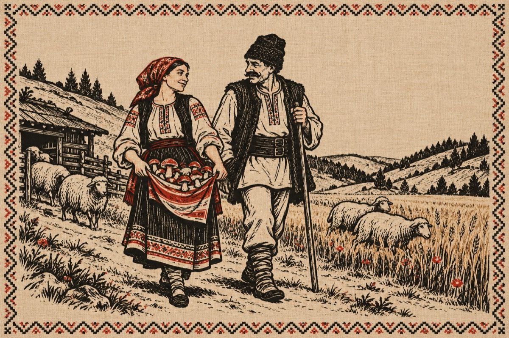

Văsălie la stână
– Tu Mărie ce-ai în poală?
De ai mărsul legănat?
– Nu che teme, n-am vreo boală,
Ciupercuțe-am adunat!
– M-am temut că ești beceagă
Foalele țâ s-or umflat
– Tu zăuiți că ți-am fo’ dragă
Șâ-oarece s-o fo-ntâmplat?
– Tu Mărie cât e ceasul?
– Jumătate e la tri
– Dute-n luntru toarnă cașul
Că io mărg în deal la oi!
– Dară duce că-i târziu
Șâ grăbește-te-o țârucă
Tăte s-or țâpat în grâu
Sărăcia-ncet ne mâncă!...
– Las-o-nclo de sărăcie
C-am uitat ca să te țuc
– Bată-te mă Văsălie
Iar te porți ca un năuc!...
– Ce să-ți fac Mărie dragă
Mi-s beceag, tu ești beceagă,
P-amândoi boala ne-aleargă!
Vasile Groza